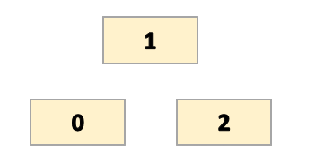
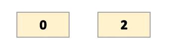

UWB Calibration
Bias Setting
Accurate calibration of the system’s azimuth and elevation is essential for ensuring precise directional measurements.
In this process, the biases are determined using the antenna’s position, specifically at a 0-degree reference.
Below is the procedure for calculating the RNGAOA biases when the antenna is positioned at each specific antenna position.

{kind=link}
Azimuth Bias
The azimuth bias is the error in the azimuth angle measurement at the 0-degree reference, influenced by the antenna’s position. It is calculated as:
- Where:
PD01 and PD12 are the measured values from the antenna at the 0-degree azimuth reference.
The negative sign indicates that the sum of PD01 and PD12 needs to be subtracted to correct the azimuth measurement.
Elevation Bias
The elevation bias is the error in the elevation angle measurement at the 0-degree reference, also influenced by the antenna’s position. It is calculated as:
- Where:
PD01 and PD12 are the measured values of the antenna at the 0-degree elevation reference.
The negative sign indicates that any difference between PD01 and PD12 must be corrected by subtracting this value from the reported elevation.

{kind=link}
Azimuth Bias
The azimuth bias is the error in the azimuth angle measurement at the 0-degree reference, influenced by the antenna’s position. It is calculated as:
- Where:
PD02 is the measured value from the antenna at the 0-degree azimuth reference.
The negative sign indicates that the PD02 needs to be subtracted to correct the azimuth measurement.
Ranging Bias
Ranging bias refers to the deviation between the actual distance and the detected ranging distance. It is calculated as:
- Where:
The unit of ranging bias is in centimeters (cm).